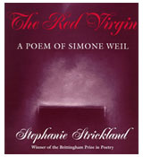
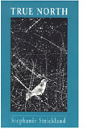
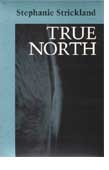
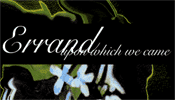

|
INTO THE SPACE OF PREVIOUSLY UNDRAWABLE DIAGRAMS:
Jaishree K. Odin: Stephanie, since True North and V seem to be so closely related, my questions will deal with both. True North begins with a poem about the desire for a woman's form of writing (Guneaform). In V , you create a woman's language where patriarchal formulations of material as well as mystic experience for women are recast and retold from various perspectives. Your recasting is at several levels, invoking real women as well as mythological figures and stellar constellations. This results in imagery and metaphors that are very feminist in orientation and impact, yet what I find remarkable about your work is that you resist getting locked into that experience—it is just a jumping ground to more profound themes of human relationship to the world and to broader cosmos. Would you like to elaborate on that? Stephanie Strickland: The levels are always interwoven. Three impulses seem to work at once. One, my father was an engineer, master of the abstractions of math and physics, but much more to the point, for me, he was a practitioner: sailor, carpenter, electrician, mechanic, metal-worker. And I saw, as a child, that practice trumped system: the changing color of the sea trumped the readouts of the electronic gear when trying to discern a shoal in real time of real danger. (The downside of this was that he distrusted "pencil-pushers." This put me at odds with him and in league with my grandmother who believed in "little people" and told me poems and stories.) Two, I'm not sure just when I realized that some people don't regard other people as people. The Spanish conquistadors had some 8-12 categories from animal up to Spanish male, with women and children and indigenous people and so on somewhere down the list. I'm not sure when I realized that language was putting intolerable pressure on denigrated bodies, those "less-than-persons," but I can't remember not feeling that pressure, probably first as it affected my mother's body. Three, Simone Weil was the first woman I read whose style convinced me she knew her own mind (Gertrude Stein too, but I read her later), her mind inseparable from her clumsy, sensitive, empathic body. A wonderful value of her philosophy is how body-based it is. She had utmost respect for "the work entering the body" in the lives of laborers, fishermen, and farmers. Her concerns could not have been broader, the whole good of humankind, the way to use and value knowledge. JKO: Your earlier work The Red Virgin is about Simone Weil's life and V is dedicated to her. Weil's fight against social injustice, her concern that each human being has a right to choose, her rejection of the prescribed gender roles and her developing a world view of her own are remembered with as much intensity as her rejection of traditional religion that celebrates a tyrant and tempter God. V: Losing L'una is then about losing Simone who is compared to the moon. The moon becomes a metaphor for the mother who lights up the sky in the night, only to disappear as the new day dawns. V: WaveSon.nets are poems to recover the mother that was lost in the waves of the world. I see the theme of death and rebirth as central to V . Is V a eulogy to Weil's life and her spirit? SS: More elegy than eulogy, I think. But not only for Weil. If L'una is the moon (luna), it is also a solitary female one (l'una). If the moon is the mother, then a shift in what "mother" is takes place. It is the solitary woman, not the pregnant woman, of True North, who comes forward. (The Old Woman, broom-rider, Hag of Beare character appears in many guises in True North.) L'una, "the one," is also the daughter Persephone disappearing, this time under the sea. The lost daughter is also Weil, lost to her mother at age 34. The mother-daughter and the solitary-wise-woman-witch figures become fluid, turn into one another. In V: WaveSon.nets/Losing L'una, waves of sound on a network carry L'una away, but she resurfaces in V: Vniverse. At the end of the WaveSon.nets Weil stands swaying at prayer in the stance of a rabbi she could not have been, a dragonfly above her head. She doesn't stand outside time or make a system. She works from this transgressive body, transgressive for a Jewish prophet. JKO: Complexity and brevity go hand in hand in your poetry. You are also aware of the limitations of language to express the profounder states of reality. In True North, you give this state the name "true north." True North, your poetry reveals, is best reflected in the shortest length of the shadow at noon as determined by the earth moving around its own axis. I see the metaphorical use of the spinning earth as the invisible center of your poetry especially significant as it applies to the creation of women's poetics. No longer are the metaphors and imagery used where the earth is seen as revolving around the sun. The guidance does not come from the sun, but from the spinning earth, the physical memory as encoded in the DNA, personal memory and so on. Whereas there is a pull towards abstraction in your poetry, I also see a counter pull towards being grounded in the material experience. Is that because of your location as a woman poet? SS: You are right that the sun is not guiding the way a sun-king guides, head of a formalized stratified system. But we only know earth-spin by bodily registering of sun/shadow. It is the sun/earth relation forming our bodies, coded in DNA as you say, but also open to contingency. If another asteroid hit the earth, and the sun were obscured for weeks or months, then the method for finding true north, in the "True North" poem sequence, wouldn't work. The body-based grounding comes from the three things I mentioned before—my father as practitioner, my mother's body and others registering subordinate state and vulnerability, and Weil's ability to make "living proof" work in language. Not only she, of course. Heidegger, Wittgenstein, Gendlin carry this forward. JKO: In True North, your allusion to Emily Dickinson's poetry on the one hand and to Willard Gibbs's scientific theories on the other is an interesting way to juxtapose poetic discourse and scientific discourse in its purity. You seem to say that both Dickinson and Gibbs developed their system of notation or symbolic language based on their notions or beliefs. However, whereas Gibbs's works are almost inaccessible to everybody but a few experts in the area, Dickinson's is accessible to a wider audience. Was this comparison to show how poetic language can have wider appeal than scientific or mathematical language? SS: To me, Gibbs and Dickinson were equal, in courage, in creativity, in isolation. They were both exemplary language-makers, and they moved their language toward the graphical. Gibbs devised visualizing methods which redefined the meaning of space. Instead of being a static Cartesian grid, his phase space could represent every possible lifeline of a system, any number of coexisting systems. Gibbs's method, which was criticized by some as merely visualizing, was grasped at once by James Clerk Maxwell—the man whose equations define electronic reality—as both profound and productive. The very shapes of graphs and models yielded truths about energetics of the system—the relation of transitions to degrees of freedom and free energy; phase transition itself, as from ice to water, being a change of identity toward which the whole system was attracted. Dickinson refused to title more than 1700 poems, and she evolved singular methods of both production and punctuation. We forget that she operated not in a print world, but in a world of handwriting and envelope-folding, a topologic/origami world of poem-production. [See The Flights of A821 http://altx.com/ebr/ebr6/6werner/6wern.htm] But her most radical innovation, extraordinary still, was the hyperlink experience she provided in many of her poems. She placed a superscript cross (as we would place a footnote marker) to indicate words, or places, where she wished the reader to consider a range of choices. The choices she wanted to present were inscribed across the bottom of her page. These cross—or crossroads—markers are not signs of preliminary indecision. They are, carefully copied on pages that are carefully sewn together, endorsements of multiple meaning. JKO: Does that mean that you are attracted to the complexity of vision that is inclusive of states in multi-dimensional space in the works of Gibbs and Dickinson and their unique use of discursive tools of their respective fields to convey that vision? SS: Yes! And I wonder where are we being taken now by the new science and math carried out on computers. Into the space of previously undrawable diagrams—like fractals—that they make possible for the first time. What kind of complex spaces are we already inhabiting and moving toward? We have to make the kind of leaps that Gibbs and Dickinson did in their time. We need to renew our language in order to know and extend our values and visions. JKO: You have said on different occasions how mathematics has fascinated you all your life. You make a liberal use of numbers structurally and thematically in V . The structural design of V is highly innovative as you use numbers to split the text in multiple ways. The short three-line subsections of each poem in V: Losing L'una are in fact continuous, but could also work quite well as discontinuous pieces as these are aphoristic in nature. In V: Waveson.nets, too, the sonnets, though numbered, at the same time run into one another to lead to a continuous piece which is at the same time a collection of individual sonnets. Is the use of numbers that are used as headings and subheadings a way to show the intimacy of relation between ideas or do the numbers have some more profound purpose in the poems? Is there some specific pattern to your use of numbers in this text? SS: Probably the most radical thing that can be proposed is that numbers are human creations subject to the constraints that constrain bodies. How to think this? "Who Counts, Counts" in True North tries to raise that issue. What V does is make you think about numbers. Will you read them as written text, will you speak them silently, will you pass over them? They have their own lives. If you skip over them, they still work as a kind of punctuation or pause mechanism. They make quanta of the bits of text which in turn can overflow them even as they take shape from them. There are numbers that rotate like bicycle-lock dials in V: Losing L'una. What happens to the left of the decimal doesn't affect what happens to the right. Two simultaneous orders of counting are happening—in one number. V: WaveSon.nets appears to show simple numbering, but these ordering numbers don't serve to "discipline" the text which only rarely begins or ends in line with the number. It is as if a calibration tool were slipping over the surface of the text with a certain amount of play in it. In V: Vniverse the numbers name the stars, accompanied by keywords. One can reach any constellation by entering a number, like a code, in the upper circle. JKO: There are so many dimensions to your poetry that with each reading the reader is hit by a new wave of ideas. It is fascinating to see how you use numbers to show discontinuity in continuity in an embedded reality where some layers might be continuous while others discontinuous at one level, only to change that order at another level. It seems to me that your use of numbers in V presents the pulsating movement, the rise and fall of events—the rhythm of life itself. Would you agree with that interpretation? SS: The rhythms of life, in and out of phase with each other, and the felt sense that seeming abstractions have profound physical effects, the weight of the wave. JKO: Some poems in True North beautifully comment on different ways of seeing and different levels of meaning. For example, one poem points out that it is one thing to see the rainbow and imagine a pot of gold at the end and it is yet another thing to go into the clouds and find the rainbow, only to see it dissolve into nothingness as its structure is analyzed. Something similar happens as we view ink wash paintings, the White Crane series, by Wang Wei. In your poetry, do you make a distinction between conveying viewing of dynamic events and occasions evoking complex reality of vectors and forces and viewing of reality that is frozen in time and space? SS: My poetry wants to move from static moment to dynamic movement because that is the way the world feels to me. I, my generation, the 20th century, have lived through huge shifts in knowledge, circumstance, and media. Carol Muske-Dukes, in the LA Times, said of V : "…the elegiac feel of these poems is haunting and passionate, inspiring the reader to listen to the 'waveforms' of the human voice. They read like the one long episodic dream of a being who exists between atmospheres, like a mermaid." Existing between atmospheres seems right to me. It means moving between many atmospheres, many media, between print and screen, as most TIRWeb readers do. JKO: A number of feminists have commented on women's relationship to mysticism in the West. For example, Luce Irigaray describes the mystic experience as an essentially feminine experience, represented best through the metaphor of touch as in this experience both the individual "soul" and the unknown or the "nothingness" touch one another without one becoming lost in the other. In V , you use the term Godde to point to a reality that is attributeless and you use the words "opening the channel" to come in touch with the waves or vibrations of this reality. I see here a shift from seeing to touching. But some poems also refer to hearing or "hallucinated hearing." Do you use touching and hearing to represent two different experiences or one and the same experience? SS: Both touching and hearing are privileged in V. Both are disprized in our world compared with the visual. Children whose preferred learning mode is kinesthetic or aural have a very hard time with our sight-based education. Both touching and hearing are close to waves—vibrational touch and acoustic waves. V: Vniverse is visual, but in a diagrammatic way, not big images. Cynthia Lawson and I would like, if we could get grant money, to implement sound in the vniverse, but whether that will happen is an open question. JKO: Do you privilege touching and hearing over seeing because it is more liberating to you as a poet and provides you an effective way to convey the fluidity of events and relations, unlike seeing, which historically has been characterized as a mode of perception that tends to fix people and places into stable configurations where the interrelations, already mapped out in the act of seeing, define, categorize, and immobilize both the people and the spaces they inhabit? SS: I do it first because I am primarily a kinesthetic learner, then a listener. I have a hard time learning with my eyes because the sight in my two eyes is very unbalanced and very weak. Secondly, I do it for the reasons you say, the way everything in our lives—categories, formats, buildings—is subordinated to a visual perception of space whose imposition passes largely unnoticed, felt to be "natural" or "eternal." JKO: You give an interesting twist to Emily Dickinson's wordsmithing, in that you work at the level of words. By bracketing or splitting parts of a word, you provide the reader an opportunity to view the word in its different transmutations. For example, the word l[ac]una[e] seem to be two superimposed words "lacunae" which means "gaps" and "luna" which stands for the moon. And of course, you also point out, it stands for l'una or "the one." Other such words with shifting meaning are: G[o]d, Green-wi( )ch, Waveson.nets etc. Do you find double- or triple-coding words an effective way to convey shifting relationships between things and ideas? SS: God, Godde, G[o]d, go(o)ds all show how enfolded our history is with naming: God hugely normalized today; Godde an older form that "feels" feminine and disyllabic; G[o]d to show respect to the Jewish way of not naming God in writing, the belief you can't/shouldn't capture this in a written mark; go(o)ds for a world in which the market is god. Double- and triple-coding do work to allude to the archaeology of language. But it only goes so far. To really feel shifting relationships, the reader has to let himself be shifted—or let herself shift—across more than written word variants, across numbers, across borders, across media into the interactive, or into a network, or perhaps into a video-based installation that works with moving bodies. (Another vniverse implementation dream that remains just that.) JKO: I read the hypertext version of True North after reading the print version. I think reading the hypertext version makes it easier to detect connections amongst various poems and various parts within the same poem. The hypertext version is a work that could stand by itself. If, however, the print and the hypertext versions are read together, I experienced the hypertext version more as an aid to further my understanding of the print poem. The linkages made it easier for me to understand the authorial intention with respect to various connections. But then one has to ask, is that really necessary? How do you think we should approach works that are available both in print and hypertext versions? Should the versions be read together or should the reader pick one of the two based on her preference of the medium? SS: The reader should follow her own mind in the matter. I've discovered that readers are often imprinted to the version they read first, using the other as a gloss. We do that in life too, somewhat necessarily. How can we open up to each other in a back-and-forth? The dual-existence of True North and the triple-existence of V try to get at this issue. The two, or three, are not the same, and yet belong together and change each other by constantly renewed proximity. A thing can seem to stand alone, be readable on its own, but it's not; it is in a world of relations that is ongoing. Storyspace or Director, for instance, the software programs used for True North hypertext and V: Vniverse, have their own specific history. Much work is done on the Web that is of an entirely different nature. If you arrive at the Vniverse from programming, it will seem very different to you than if you arrive as a print reader. Each person comes their own route. The question is, do they reflect on a relation of route to route, do they see inter-relationship as perhaps more important than any one instance? Might they find that V , for instance, exists most truly in a new space between its "versions"? JKO: The title V is very revealing. As you point out, it is an iconographic image, but it also stands for many other things, for example, virginity, abstraction, bird's flight among others. Most of all it refers to the conical hat of witches who were persecuted for daring to seek knowledge. How did you stumble upon this multivalence of V in both written alphabet and the shape that symbolizes an idea? SS: V is at first the waveshape. Hold a stylus to stone and move your stone-holding hand back and forth. With perceptible physical effort, you inscribe the stone with V, with V 's, VVV, a waveform, zigzag, ricrac. V is next the shape of an open book, here opened far enough to let the text jump up to a vertical screen.V is the shape of an entire assembly of geese in flight. Flying in V formation the whole flock adds 71% greater flying range than if the bird flew alone. The Storyspace map of "The Mother-Lost World" section of hypertext True North is a soft V-shape, a breast or cornucopial basket. It repeats the shape given to the overall True North map one logical level up, and, in turn, repeated one logical level down, it serves as the profile or contour of many of the poems. In True North hypertext, and even in print in the poem-contours, the meaning of this ever-recurring form speaks before any words are spoken. It speaks more strongly in V. V is lifted wings and a witch's hat, if you turn it over. It is critical that you do turn the book V over to read it. From this gesture in 3-space you move to vertical reading on a screen. Ideally, Cynthia Lawson and I would have used VRML, but that's too hard, and too hard to access, in 2002. So the dimensionality onscreen is given by reader-action, by decays and overlays that reader choice brings about. It is also given by images such as the Dipper constellation. The Little Dipper portion is indeed a dipper shape, but it is paired with the Big Dipper which is a bear's head, referencing its Latin name Ursa Major. This "condensation" of levels, of image and name, is very characteristic of electronic media, though usually the levels are text and code. But in receiving that image you are receiving some hybrid, a cognitive image operating on several levels. JKO: The web version of V, V:Vniverse, is very interesting in that what the reader reads in the print text becomes interactive in the electronic version where it is easier to depict the relationships between various constellations, the numbers and the poems. In my experience of the web version, I felt an important part of the text couldn't unfold for me because I am not very familiar with various constellations. In that sense, I feel the web version brings out a totally different aspect of V which is not so obvious in the print version. How do you see the relationship of the print version of V to the web-version? SS: To answer by way of True North first. True North explores embeddedness and orientation/navigation from, or together with, a woman's body and voice. In print True North there are many embeddings: embryos, technologically mediated pregnancies, slaves in the hold of the Amistad, poems in Dickinson's drawers and chest, papers of Gibbs in a tiny neighborhood science journal, the crew of the Challenger, art high up on cave walls, fractal patterns, numbers on the number line. In print, navigation is primarily a theme, how to find true north, how to find our way in an ecologically threatened and unjust world. In True North hypertext, navigation becomes an actual necessity for the reader who has to act it out: figure out a new set of reading rules; negotiate embedded, nested, nodes; traverse and suss out a created link structure. S/he has to ponder what it means when the search function tells her "angel" appears in a node, but s/he can't find it there, until noticing that "strangely" embeds "angel" from this computer program's point of view. In V: Vniverse, Cynthia and I have tried to make it operable without a need for specific learning about new navigation, trying to use what carries forward from the reader's present world that will allow a transition to this new one. Having said that, however, the Vniverse permits an experience entirely different from the print. Only there, the numbered stars, their keyword names, the tercet structure underlying the WaveSon.nets, the oscillation between tercets and son.nets, the oscillation between text and image where both are operating simultaneously. Only there, the overarching Wave Runs, the search for constellations. Vniverse constellations are not those of either astronomy or astrology, though the Dipper is a connecting link between constellational worlds. These are constellations that come from the "mermaid," or L'una perhaps, Persephone seeing beneath the sea and up through it: the sweeping broom, the flying goose, Kokopelli, the swimmer, the bull's head, the fetus, and so on. The poems associated with each constellation are understood differently in terms of that shape. The constellations affect your reading, but so too do the decay of the texts and the ability to overlay any star on any constellation. The interactive reader has chosen to draw his or her own "heaven," or to gaze at another's. I should mention that another poem from V: Losing L'una, "Errand Upon Which We Came," also has a Web implementation, as a Flash movie created with M.D. Coverley. It is a poem about reading and how reading has changed enormously in the last few years. In it we use a Nabokovian butterfly from the Zembla website (with permission, of course) to "pin" the movie, to stop the flow, if one so wishes. Here it is the butterfly "pinning," not "pinned," for a change. Simone Weil is quoted in "Errand." Like Dickinson, most of her work was never in print in her lifetime. Here again, it is not in print, but reminding us of a long history of reading stretching back through hearing and folktales. It is curious to think what it is about the work of Dickinson and Weil that enables it to survive print, survive the tendentious and misguided print editions, and lack of edition, both endured. JKO: It seems to me that your increasing experimentation with web implementations of your work is a means to find more effective ways of conveying the shifting and changing relationship between complex interrelated themes in your poetry. Vniverse brings out the visual dimension of V which is alluded to in the print version of V but does not manifest there in any concrete form. Can one say then that V: Vniverse goes beyond the print version and is genuinely unique in itself, and that, unlike the print V, it brings the act of reading to the foreground? SS: I think so. Each part of V is entirely distinct, and yet they are evidently interrelated. I think to see the poem shift back and forth between tercet and son.net form, to really play with that, to actively read that, you need an interactive poetic system. And yes, this does challenge our ideas of reading. How does one read a poetic system? We've been accustomed to thinking of games as systems, not of poems as systems, though the old oral epics were poetic systems. JKO: Do you think the flexibility of expression that the electronic media allows would eventually take you away from print to totally electronic modes of expression? Also, your electronic works, except for True North, are always collaborative undertakings. How do these collaborations affect your sense of ownership of your work? SS: I would love to make installations and VRML poems. I am a believer in poetry taking place in social spaces, which was one of the ideas behind the TechnoPoetry Festival I created last spring at Georgia Tech. But I also prize the solo experience, with book or screen. However, what is missing now, in my view, is attention to how language, words, text can work effectively in electronic art, as opposed to how software and graphics work. It is the missing resource. They all need to work together. Attention has not been paid to text because there is no market for it comparable to game graphics. Also, attention has not been paid to how people can interact in a social space with electronic art and feel gathered in and made part of it, not left totally clueless about the effect of their own interventions. I grew up listening to words and feeling their pressure. I do not feel that words will "go away," though some would have us believe in a so-called coming language of media-making that might bypass "natural languages," the many world languages. I think those languages are precious resources, all of them, and that poets are charged with their care. The vast store of learning about language is in oral and print media, at this point. As for ownership, well, I know how these works came to be on my part, and I know how they led me on. They led me into collaboration and exploration of new spaces. Maybe it is like the flock of geese, a much greater flying range than if the goose flew alone. In the case of poetry, money doesn't drive it, at least not in this country. Maybe if it did collaboration would be much harder to do in an exploratory spirit. JKO: One last question! What are you currently working on? SS: A lot of new and uncollected poems that seem to want to be a book. I also plan to do another collaborative e-work with a new partner, but we haven't even begun to start. Cynthia and I would like to implement sound in V: Vniverse, if we can get a grant. I'm doing some teaching, and I'd like to do more, visiting colleges to do workshops where print and electronic forms of poetry are considered together. |